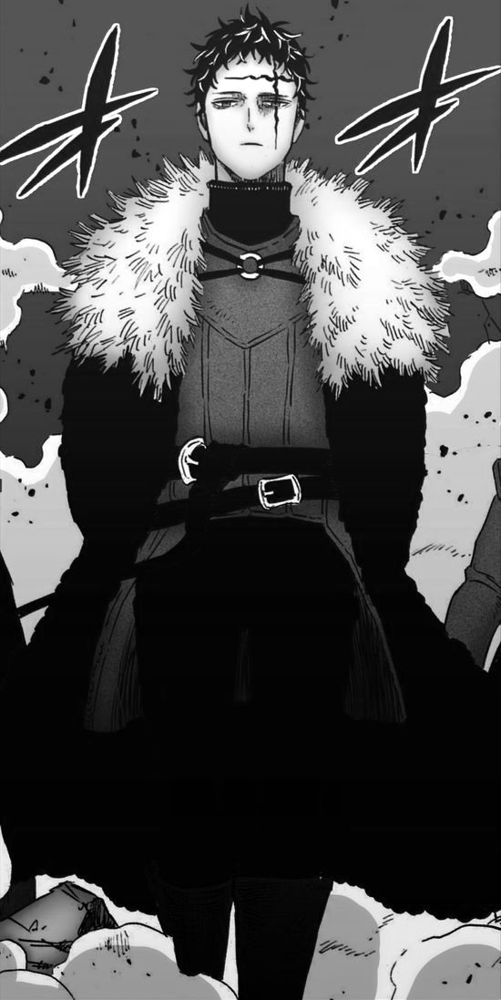
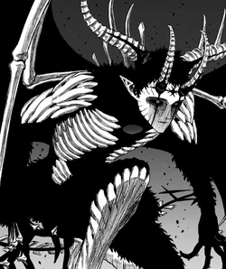

Triade Negra

A Tríade Negra são três magos que atualmente governam o Reino Spade. Anos atrás, eles usurparam o governo do Reino da família real, a Casa Grinberryall. A Tríade Negra usa o medo para subjugar o povo e assumir o controle da nação. Sob seu domínio, o Reino Spade conquistou a maior parte do Reino Diamond e começou a se preparar para invadir os outros reinos. Os cidadãos mais fracos do Reino Spade foram forçados a deixar suas casas e servir como fontes de poder mágico para as fortalezas móveis do reino. Um dos objetivos da Tríade Negra é a recriação da Árvore de Qliphoth, um canal mágico que permitirá que demônios entrem no mundo dos vivos. A árvore requer Magia de Árvore do Mundo e Magia de Escuridão para crescer, então Zenon Zogratis lidera um ataque ao esquadrão Alvorecer Dourado para capturar William Vangeance, enquanto Dante Zogratis ataca o esquadrão Touros Negros para capturar Yami Sukehiro.
Membros

Os membros da Tríade Negra são todos conhecidos por serem magos extremamente poderosos, cuja força está no mesmo nível dos demônios, já que eles são possuídos pelos demônios de nível superior do submundo. Seus subordinados diretos são conhecidos como os Discípulos Negros 「漆黒の使徒ダークディサイプル Dāku Disaipuru」 . eles são magos fortes e leais com os quais os membros da Tríade Negra compartilharam parte do poder do demônio, eles podem acessar proporções significativas do poder do demônio, como 40%. Esses poderes concedem à Tríade Negra e aos Discípulos Negros um grande aumento de poder que lhes permite enfrentar e dominar facilmente um esquadrão de Cavaleiros Mágicos por conta própria.
Zenon Zogratis
O Mago dos Ossos
Zenon é um homem alto com cabelo preto e bagunçado. Sua característica mais notável é uma marca preta em forma de cruz no lado esquerdo da testa e se estende para baixo até o olho esquerdo. Zenon usa uma camisa preta com gola alta e calças pretas que encaixam nas botas marrons. Além disso, ele usa um casaco de pele azul escuro com um manto de pele cinza claro no topo. A parte de trás do manto é estampada com um símbolo spade. Ao usar o poder demoníaco, o manto fica de cor escura. Ao usar 55% do poder de seu demônio, Zenon brota um par de chifres levemente curvos do alto da cabeça e asas de morcego nas costas, e a marcação em seu rosto se expande. Uma magia de cor escura cobre mais da metade do corpo, incluindo o chifre e a asa esquerda. Depois que Zenon libera 100% do poder demoníaco, todo o seu corpo é coberto de preto, incluindo chifres e asas. A armadura criada a partir da Magia de Osso cobre seu peito na forma de uma caixa torácica, apêndices ósseos brotam de suas costas, seus ombros, antebraço, mãos e pernas são cobertos com armadura de osso, um acessório parecido com um capacete feito de osso cobre seu chifre esquerdo, bem como metade de seu rosto, a marca de cruz se expande para a parte direita de seu rosto e um segundo conjunto de chifres menores aparece em sua testa e ele cria uma cauda semelhante a um chicote com uma ponta em forma de tridente.
Demonio
Beelzebub「ベルゼブブ Beruzebubu」um dos demônios de nível superior conectado à Árvore de Qliphoth e tem contrato com Zenon Zogratis, um membro da Tríade Negra do Reino Spade.
Poderes
- Magia de Osso: Zenon usa esse atributo mágico para gerar e manipular ossos. Ele normalmente libera enormes emaranhados de ossos que não oferecem aberturas para fugir e são afiados como lanças, permitindo-lhe espetar brutalmente seus oponentes. Ele também pode aumentar a regeneração desses ossos para fins defensivos, reparando-os mais rapidamente do que podem ser destruídos. Ele também pode transformar os ossos em armas para empunhar com as mãos, como uma espada. Depois de liberar 100% do seu poder demoníaco, ele muda para poderosos e rápidos chicotes de ossos que possuem maior poder de ataque e velocidade de regeneração.
- Magia Espacial: Zenon usa este atributo mágico raro para manipular o espaço. Sua versão desse atributo mágico envolve a criação de cubos espaciais que permitem que ele domine e negue a mana presa dentro deles. Os cubos podem variar em tamanho e número.
- Magia de União: Zenon combina sua Magia de Osso com a Magia Espacial de Beelzebub.
- Espada Demoníaca Dainsleif: Uma Espada feita de ossos que tem um poder capaz de corta qualquer coisa.
- Poder Mágico Aprimorado: O enorme poder mágico de Zenon aumenta ainda mais.
- Regeneração Aprimorada: Devido ao seu coração demoníaco, Zenon é capaz de sobreviver e se regenerar de ferimentos que de outra forma seriam fatais.
- Poder Demoniaco/Transformação Demoniaca: A Transformação Demoniaca de Zenon, quando ele desperta o 100% do poder de seu demonio.